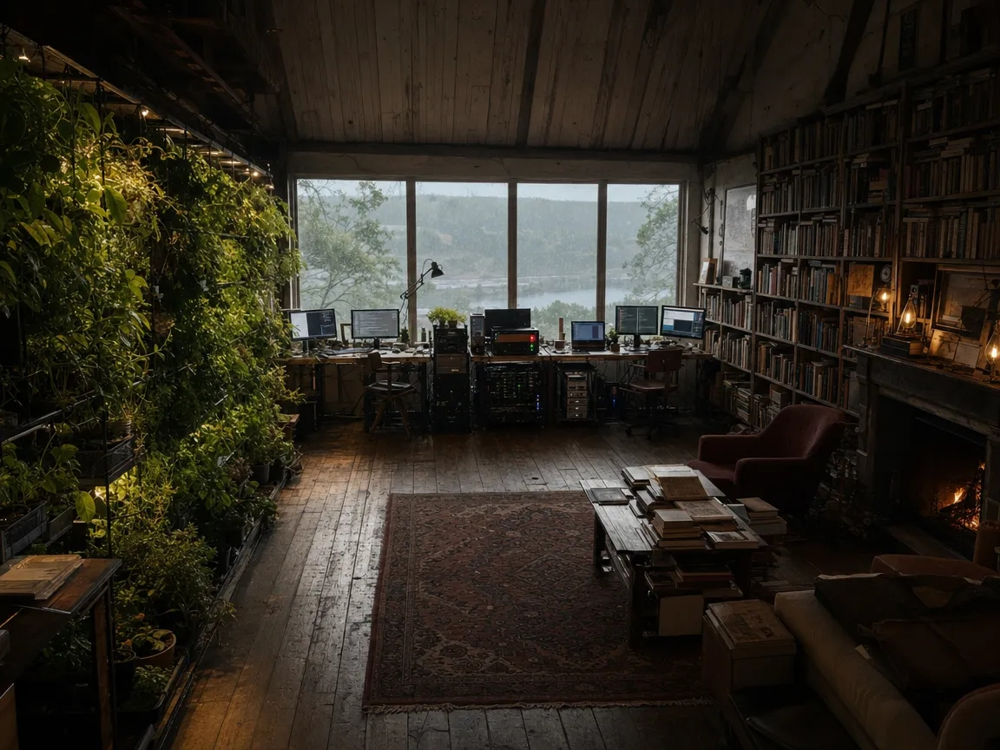

Elias’s Loft
A wide-room study of the old top-floor loft: the large east window, joined computer desks, one long wall of living greens, and tall shelves of books around the fireplace.
The intent here is not spectacle, but a habitable world of wood, rain, thought, and cultivated attention.